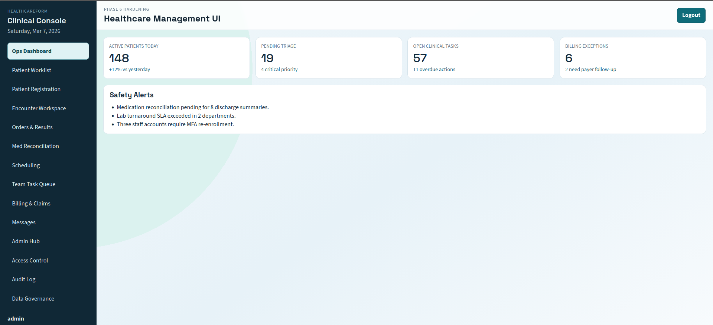
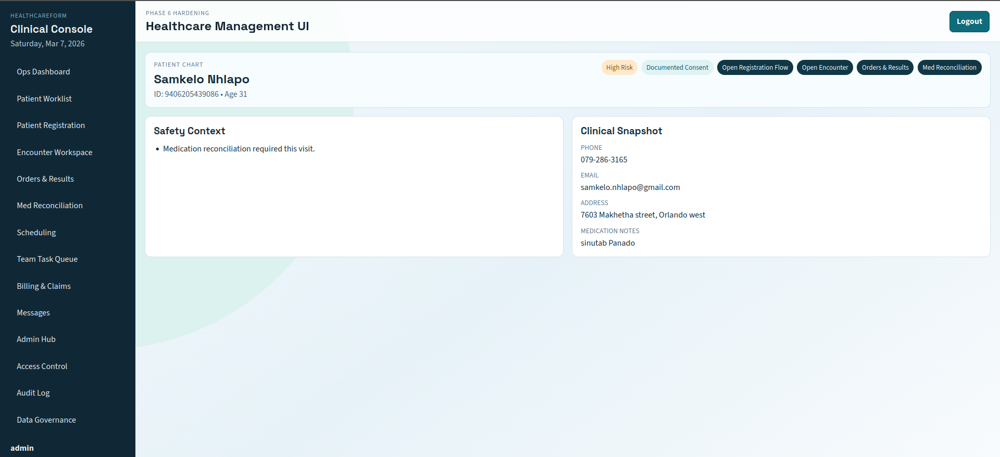
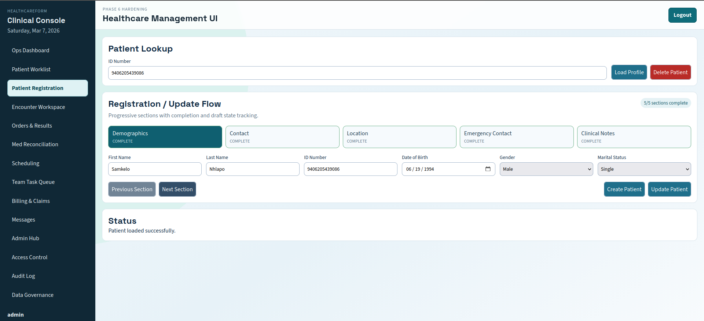
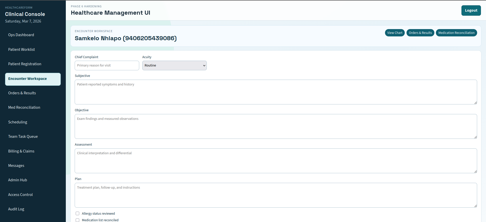
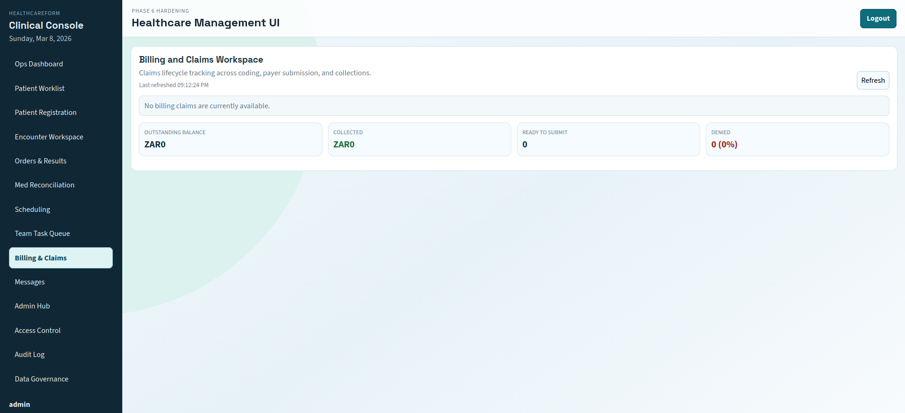
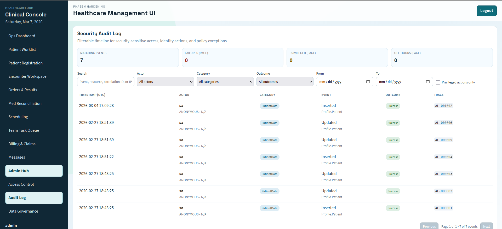

A comprehensive platform for healthcare providers to manage patient data, appointments, medical records, billing, and compliance with role-based access control.

34-table SQL Server database in 3NF for healthcare management, demonstrating advanced data modeling and analytical capabilities.

Central record with demographics, medical history, allergies, medications, and lab results. Complete 360° view of patient data.

Dynamic form templates with versioning and review workflow. Supports intake forms, consent forms, and more.

Appointments, consultation notes (SOAP), referrals, and provider management. Integrated with ICD-10 codes.

Patient insurance, invoices, billing codes, and payment tracking. Auto-calculate patient portions.

User roles, permissions, and comprehensive audit log for compliance tracking.